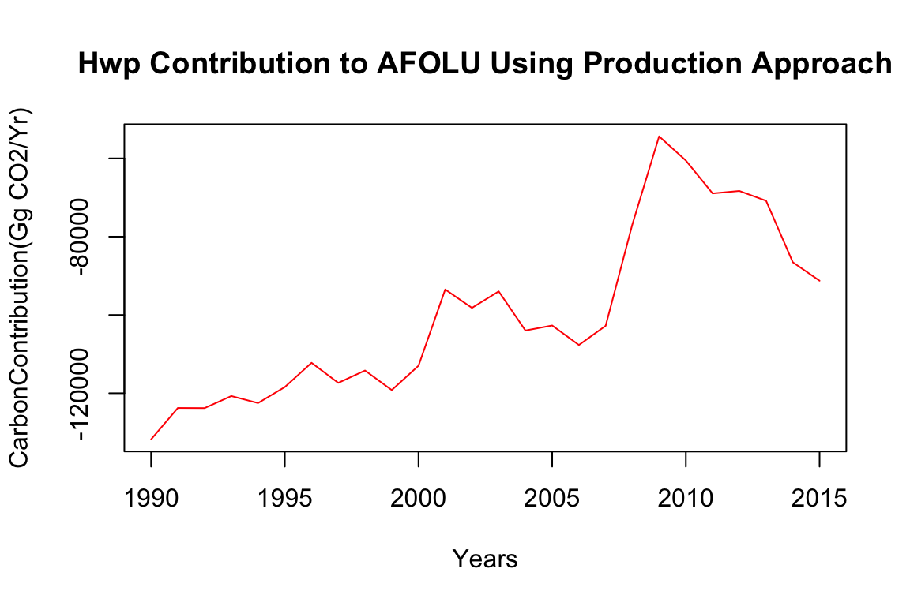

This package is designed to calculate various statistics regarding wood products in the United States. Included are functions to calculate carbon from dumps/landfills, paper and wood products of different wood types. Statistics are broken down into production, imports and exports.
The main goal is to calculate the final carbon contribution which is reported to the IPCC. This is calculated based on the approach selected (Production, Stock Change, Atmospheric).
Currently, the Production Approach is the one used to report contribution values to the IPCC.
The final reported value is the contribution to AFOLU CO2 emissions/removal. It’s units are Gg CO2/Yr
To calculate the carbon contribution:
The default arguments calculate the carbon contribution from 1990 to 2015 using the Production approach. It returns a single vector with the carbon contributions for each year specified.
finalCarbonContribution()
[1] -131771.55 -123758.01 -123790.61 -120707.52 -122498.31 -118411.13
[7] -112219.10 -117343.83 -114188.45 -119182.37 -112968.80 -93478.73
[13] -98188.13 -93967.40 -103967.46 -102683.17 -107666.14 -102762.70
[19] -76830.26 -54360.98 -60549.58 -68943.22 -68312.97 -70814.78
[25] -86538.26 -91250.87Different ranges of years can be selected along with a seperate approach.
finalCarbonContribution(Years = 1945:2017, approach = "Stock Change")
[1] -35980.51 -48968.15 -52484.20 -55691.62 -42382.72 -58923.08
[7] -55496.04 -52437.42 -54603.15 -53586.67 -59911.04 -61606.90
[13] -49815.40 -51083.09 -60704.41 -59177.18 -59187.86 -64237.52
[19] -70079.04 -76991.83 -85404.27 -89288.55 -83636.48 -90855.66
[25] -94597.43 -90666.63 -99935.74 -110015.87 -113308.72 -96044.25
[31] -75389.00 -98187.42 -110918.20 -119268.03 -119212.36 -101289.02
[37] -94125.40 -88088.50 -115062.63 -129028.90 -127623.50 -137960.44
[43] -148285.83 -144835.79 -140221.36 -129621.60 -116344.77 -119985.28
[49] -126805.46 -129953.63 -125980.54 -122340.29 -131434.35 -137217.83
[55] -147057.27 -141195.29 -125039.45 -130714.01 -125812.07 -143193.24
[61] -142102.08 -138121.66 -115131.55 -73079.21 -42305.07 -49151.35
[67] -52374.83 -57982.74 -67784.59 -110330.38 -115278.27 -119714.73
[73] -125956.87Other options include calculating using a different decay type or values for half-lifes.
#finalCarbonContribution(decaytype = "K=2", halflives = halfLives * 1.2)A plot can be returned as well.
finalCarbonContribution(plot = TRUE)
[1] -131771.55 -123758.01 -123790.61 -120707.52 -122498.31 -118411.13
[7] -112219.10 -117343.83 -114188.45 -119182.37 -112968.80 -93478.73
[13] -98188.13 -93967.40 -103967.46 -102683.17 -107666.14 -102762.70
[19] -76830.26 -54360.98 -60549.58 -68943.22 -68312.97 -70814.78
[25] -86538.26 -91250.87The final carbon contribution from finalCarbonContribution() is calculate from several variables.
finalVariables() can be used to calculate individual variables.
The variables under each approach are used to calculate that approach only.
2A - Annual Change in stock of HWP in use produced from domestic harvest (\(\Delta C_{HWP \: IU \ DH}\))
2B - Annual Change in stock of HWP in SWDS produced from domestic harvest (\(\Delta C_{HWP \: SWDS \: DH}\))
finalVariables(Variable = "Var2A")
[1] 17659.33357 14939.85484 16334.42946 14971.22105 15929.56956
[6] 15064.95468 14092.14081 14740.11768 13403.94806 14145.55577
[11] 12840.05979 8713.21957 9565.67340 9452.50336 12079.90850
[16] 11710.88488 12095.26266 10639.00367 3864.02978 -1820.66173
[21] -59.18892 1998.34356 1724.39575 2318.94405 6234.96310
[26] 7141.21700
finalVariables(Variable = "Var2B")
[1] 18278.36 18812.33 17426.64 17949.01 17479.06 17228.99 16513.07
[8] 17262.74 17738.36 18358.73 17969.61 16780.98 17212.91 16174.97
[15] 16274.85 16293.62 17268.23 17387.19 17089.68 16646.38 16572.71
[22] 16804.35 16906.41 16994.18 17366.38 17745.381A - Annual Change in stock of HWP in use form consumption (\(\Delta C_{HWP \: IU \: DC}\))
1B - Annual Change in stock of HWP in SWDS from consumption (\(\Delta C_{HWP \: SWDS \: DC}\))
finalVariables(Variable = "Var1A")
[1] 17043.7116 13128.8249 15717.7392 16956.7233 18220.9725 17306.8633
[7] 17018.0011 18755.6290 19653.6773 21444.2277 19999.5154 16491.4294
[13] 17413.8298 16986.4185 21409.1983 20989.8919 19082.7521 13091.5426
[19] 2420.1492 -5103.8430 -2895.9387 -1887.2390 -298.5597 2298.3609
[25] 12943.6684 13474.0869
finalVariables(Variable = "Var1B")
[1] 18307.63 18601.57 17005.52 17626.58 17220.93 17051.47 16347.53
[8] 17090.10 17769.37 18662.30 18508.29 17610.24 18235.45 17325.96
[15] 17643.50 17765.22 18586.79 18307.97 17510.54 16641.59 16300.85
[22] 16171.28 16112.04 16188.34 17146.43 17965.44finalCarbonContribution and finalVariables calculate the final values for the WOODCARB model. There are many intermediate calculations and statistics that can be accessed using the package that are necessary to calculate the final values.
The model considers carbon stored in solid wood products, paper and solid waste disposal sites (SWDS). There are functions to calculate amounts of carbon stored in these places.
swpcarbontotal() calculates total carbon stored in solid wood products in oven-dry tons of wood fiber.
It gives the option of returning carbon totals by end use: (the default argument returns total carbon for all end uses)
swpcarbontotal(c(1990,2015), onlytotal = FALSE)
Years EU1 EU2 EU3 EU4 EU5 EU6 EU7
1 1990 706414309 182866038 63065693 258801895 116211294 32956528 3874448
2 2015 976024693 164356403 83886558 345051002 158248655 29717939 4114937
EU8 EU9 EU10 EU11 EU12 EU13 LumberPre1900
1 97501711 32435774 83160265 180886699 231453156 478162361 70903425
2 143407013 73922231 119933477 207145928 257419209 394777995 38450600
Total Carbon
1 2538693597
2 2996456638The default approach is Production but carbon totals using the Stock Change approach can be calculated as well.
swpcarbontotal(approach = "Stock Change")
[1] 2646761363 2673035705 2703355844 2735338384 2768769959 2801338951
[7] 2835741847 2871557867 2909461717 2949936691 2989985217 3027433541
[13] 3067032562 3105954761 3151841937 3198510092 3240154427 3270837460
[19] 3281687639 3281768476 3282069463 3284479932 3289334070 3298536683
[25] 3312091178 3329495393There is an option to exclude carbon from lumber pre-1900 (the default includes this).
swpcarbontotal(lumberpre = FALSE)
[1] 2467790172 2495693767 2525224480 2553785141 2582103068 2608424954
[7] 2635211500 2662610817 2689147039 2717325851 2744848629 2768407232
[13] 2793239680 2816343113 2842445454 2868565370 2892838337 2912744438
[19] 2920184015 2920157084 2920851398 2924539963 2929302667 2937063711
[25] 2946447817 2958006039Similar to finalCarbonContribution(), alternate half-lives can be provided.
swpcarbontotal(halflives = halfLives * 1.5)
[1] 3047281504 3081105782 3116666371 3151357245 3185900880 3218529198
[7] 3251702599 3285570186 3318648380 3353450915 3387673833 3417984993
[13] 3449628580 3479590709 3512615635 3545720893 3577030346 3603998101
[19] 3618452549 3625352452 3632890524 3643358404 3654842765 3669285440
[25] 3685321129 3703513793